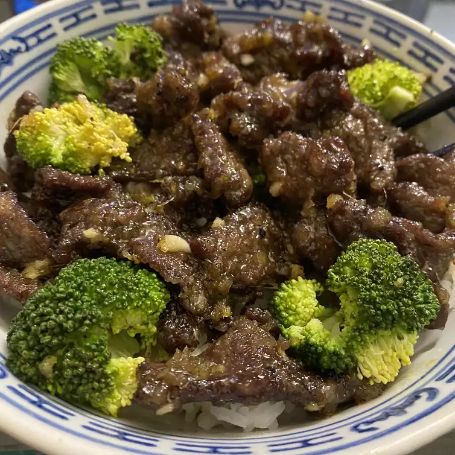

Crispy Orange Beef

Desription
A delicious crispy and sweet, yet mildly spiced beef stir-fry recipe. Great served with steamed rice and broccoli.
Ingredients
- 1 ½ pounds beef top sirloin, thinly sliced
- ⅓ cup white sugar
- ⅓ cup rice wine vinegar
- 2 tablespoons frozen orange juice concentrate
- 1 teaspoon salt
- 1 tablespoon soy sauce
- 1 cup long grain rice
- 2 cups water
- ¼ cup cornstarch
- 2 teaspoons orange zest
- 3 tablespoons grated fresh ginger
- 1 ½ tablespoons minced garlic
- 8 broccoli florets, lightly steamed or blanched
- 2 cups oil for frying
Steps
- Lay beef strips out in a single layer on a baking sheet lined with paper towels. Allow to dry in the refrigerator for 30 minutes. In a small bowl, mix together the sugar, rice vinegar, orange juice concentrate, salt and soy sauce. Set aside.
- Meanwhile, combine rice and water in a medium saucepan. Bring to a boil, then reduce heat to medium-low and simmer for 20 minutes, or until rice is tender. Add more water at the end if necessary.
- Heat oil in a wok over medium-high heat. Toss dried beef in cornstarch to coat. Fry in the hot oil in small batches until crispy and golden brown; set aside. Drain all of the oil from the wok except about 1 tablespoon.
- Add orange zest, ginger and garlic to the remaining oil, and cook briefly until fragrant. Add the soy sauce mixture to the wok, bring to a boil, and cook until thick and syrupy, about 5 minutes. Add beef, and heat through, stirring to coat. Serve immediately over steamed rice, and garnish with broccoli.